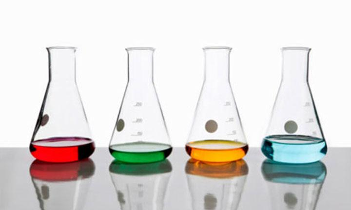
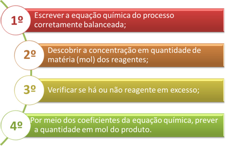
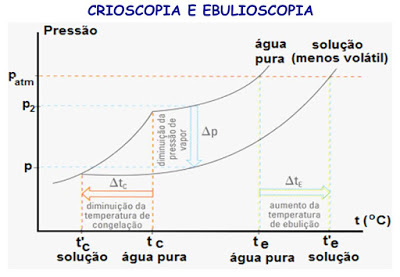

A parte mais importante da formação da solução é a solubilidade, pois é nesta propriedade que saberemos o quanto o soluto é dissolvível naquele solvente. A solubilidade de um determinado elemento em um determinado solvente pode variar dependendo da temperatura e para isso se tem o coeficiente de solubilidade.
De acordo com o coeficiente de solubilidade as soluções podem ter diferentes classificações quanto à quantidade de soluto. Sendo elas:
Soluções saturadas - Detêm a quantidade máxima de soluto que seria possível dissolver em uma determinada quantidade de solvente.
Soluções insaturadas - Detêm menor quantidade de soluto do que seria possível para a dissolução no solvente.
Soluções saturadas com corpo de fundo - Detêm a quantidade maior do que a necessária para a dissolução, deixando parte do soluto no fundo, tendo então corpo de fundo.
Soluções supersaturadas - Detêm a quantidade maior do que a necessária para a dissolução, não possuindo corpo de fundo.
A concentração das soluções pode estar relacionada a grandezas como massa do soluto, volume da solução, quantidade de matéria do soluto etc. As concentrações podem ser químicas quando dependem da massa molar e podem ser físicas quando não dependem.
Concentração comum ou em massa - relaciona massa e o volume padronizado para a solução. Geralmente é feita em g/L.
C = m/V
Densidade - relaciona massa e volume da solução. A densidade é considerada uma indicadora de concentração pois varia conforme a proporção de soluto e solvente utilizados.
d = m/V
Título em massa - relaciona massa do soluto e a massa da solução, podendo ser usado em qualquer estado físico. Também pode ser expresso em porcentagem relacionando unidades de 1 a 100.
T = m/M
Densidade de mistura - varia de acordo com a porcentagem de cada um dos componentes. Associa título em massa da solução e a densidade de cada uma das substâncias separadamente.
d solução = d soluto * %massa soluto + d solvente * %massa solvente
Título em volume - relaciona volume do soluto e o da solução, utilizado em soluções com todos os elementos gasosos ou líquidos. Podendo ser expresso em porcentagem considerando unidades de 1 a 100.
T = v/V
Concentração em ppm (partes por milhão) - relação entre uma parte do soluto em 1 milhão de partes da solução, indicada para quando a massa do solvente é quase a mesma do soluto na solução, podendo ser expressa pelo volume ou pela massa.
1 ppm = 1 parte de soluto/106 partes da solução
Concentração molar ou molaridade (mol/L) - relaciona n° de mol do soluto e volume da solução.
M = n1/ V ou M = m1/M1 * V
m1 como massa do soluto, M1 como massa molar do soluto e n1 como número de mols do solvente*
Concentração de íons em mol/L - relaciona quantidade de matéria de cada íon que está em uma solução iônica. Também pode ser expresso em porcentagem.
α = n° de moléculas que ionizaram/ n° de moléculas dissolvidas
Concentração em massa, densidade e título em massa podem se associar por meio desta expressão:
C (g/L) = 1000 * d (g/mL) * T
Diluídas - solvente está em maior quantidade. No processo de diluição adiciona-se solvente para que a concentração diminua.
Concentradas - soluto está em maior quantidade. No processo de concentração diminui-se a quantidade de solvente, aumentando a concentração.
Ci * Vi = Cf * Vf
Obs: Nos processos de diluição e concentração não ocorre alteração da quantidade de soluto.
Quando se é misturado soluções de solutos que não reagem entre si, é calculado a concentração de cada soluto na mistura final como se cada solução em particular tivesse sofrido uma simples diluição. Essa lógica é igual, tanto para concentração em g/L, como para concentração em mol/L.
É importante observar se as soluções misturadas são de solutos diferentes ou de mesmo soluto.
Uma solução é uma mistura homogênea, na qual misturamos soluções de mesmo soluto e mesmo solvente. Quando realizamos uma mistura de soluções que apresentam o mesmo soluto e o mesmo solvente, estamos apenas realizando um aumento da quantidade do solvente e do soluto, não sendo observada nenhuma outra modificação. Quando se é realizado mistura de soluções o resultado é:
Volume final = volume da solução 1 + volume da solução 2
Por meio desse dado é possível calcular a concentração de soluções iniciais e a solução final.
Se misturarmos duas ou mais soluções que possuem solutos diferentes pode ocorrer uma reação química entre eles, podemos deduzir que ocorreu uma solução final entre eles utilizando o mol/L. Nesse caso é necessário seguir 4 passos.
A titulação é um procedimento de análise laboratorial que estabelece a concentração em quantidade de matéria ou concentração em mol/L de uma solução por meio da reação química entre volumes conhecidos de uma solução problema com uma solução de concentração conhecida.
Para determinar a titulação é necessário:
Saber da concentração molar da solução que é misturada à concentração desconhecida;
Saber do volume da solução de concentração desconhecida;
Saber do volume da solução de concentração que já é conhecida.
A fórmula utilizada na titulação é:
O estudo de propriedades coligativas é extremante importante, por meio dele é possível avaliar e conhecer o comportamento de alguns solutos não voláteis quando são adicionados a um solvente.
Quanto maior for a quantidade de partículas do soluto presentes na solução, mais intenso será o efeito coligativo.
Soluções moleculares: ΔP/P2 = Kt . M
Soluções iônicas: ΔP/P2 = Kt . M. i
Pressão máxima de vapor na solução: a pressão de vapor do solvente na solução é sempre menor ao correspondente solvente puro.
Soluções moleculares: ΔtE = KE. W
Soluções iônicas: ΔtE = KE. W. I
Pressão máxima de vapor e ebulição: para que um líquido entre em ebulição a pressão de vapor do líquido se iguala à pressão sobre a sua superfície, ou seja, quanto maior a pressão de vapor, o líquido irá ferver mais facilmente e quanto menor for ponto de ebulição, haverá mais volatilidade.
Soluções moleculares: ΔtC = KC. W
Soluções iônicas: ΔtC = KC. W . I
Pressão máxima de vapor e solidificação: para um líquido passar para o estado sólido é necessário que a pressão de vapor líquido e vapor sólido se tornem iguais.
Soluções moleculares: π = M . R . T
Soluções iônicas: π = M . R . T . I